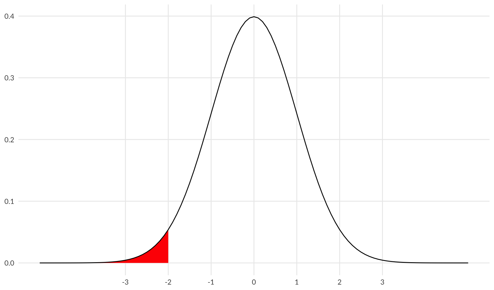
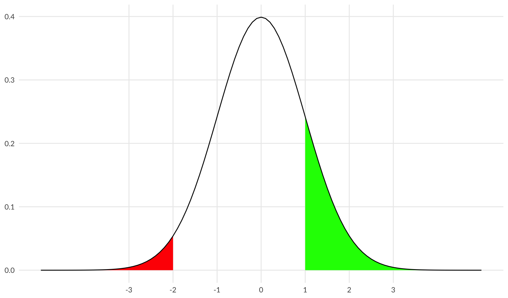
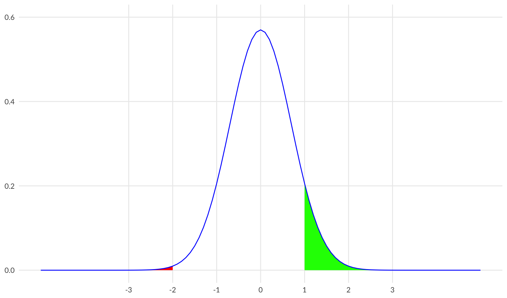
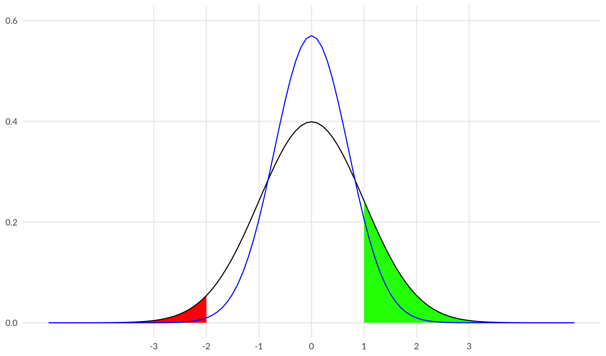
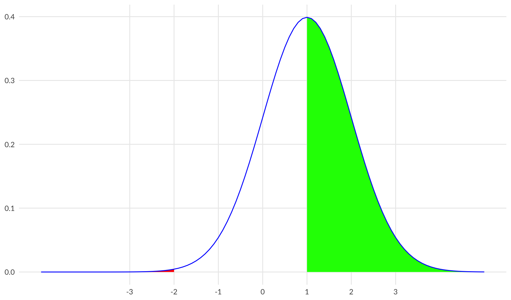
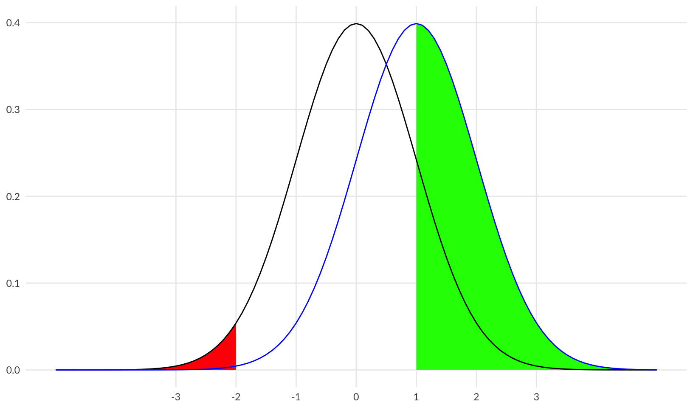
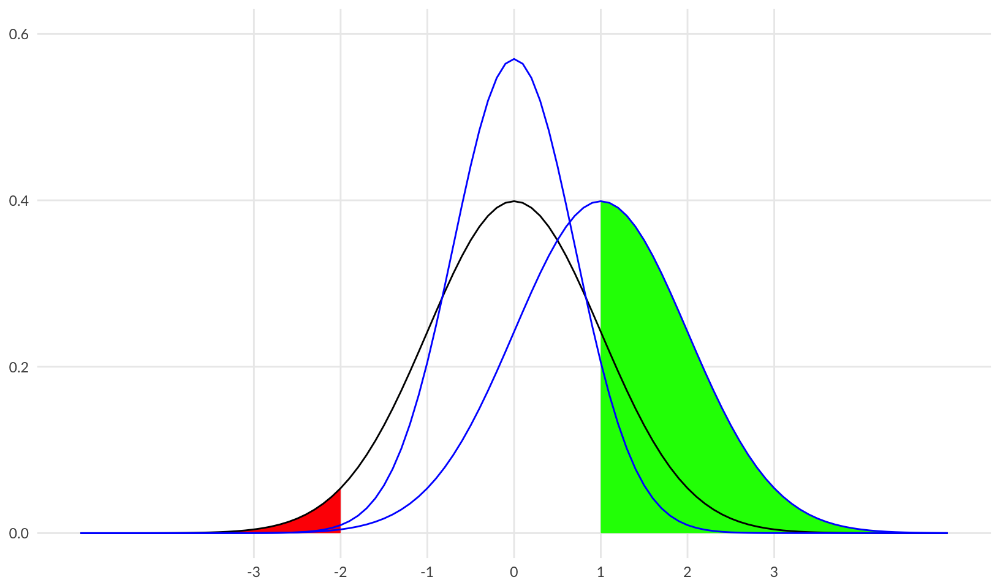
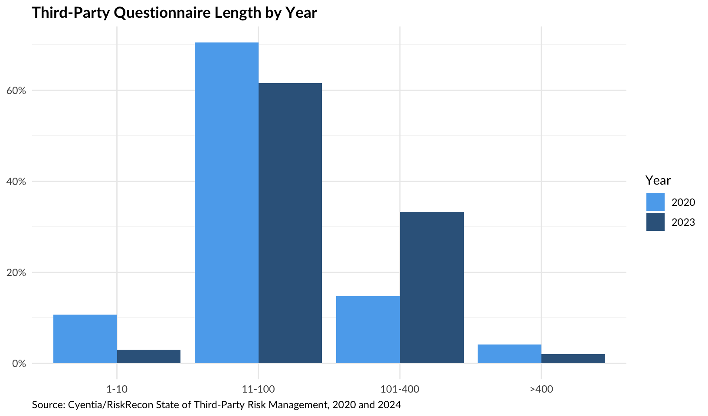
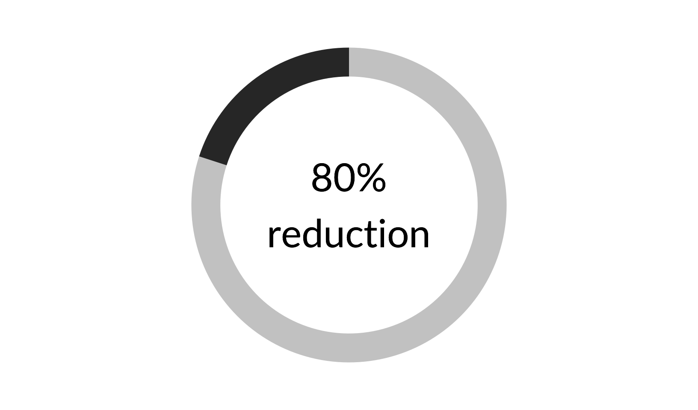

library(ggplot2)
library(jbplot)
library(fs)
library(tibble)
library(dplyr)Constraints vs Performance
security differently
Visualizations exploring the use of constraints vs performance improvements in risk management.
Normal Performance
Replicate a version of Figure 9 from the Safety-II White Paper, with help from https://ggplot2tor.com/tutorials/sampling_distributions:
xmin <- -5
xmax <- 5
save_png <- function(filename) {
ggsave(filename = path("rendered", filename), width = 16 * 0.6, height = 9 * 0.6, bg = "white")
}
background <- ggplot(data.frame(x = c(xmin, xmax)), aes(x)) +
scale_x_continuous(breaks = -3:3, minor_breaks = NULL) +
labs(x = NULL, y = NULL) +
theme_quo(minor.y = FALSE)
baseline <- stat_function(fun = dnorm, geom = "line")
bad <- stat_function(fun = dnorm, geom = "area", fill = "red", xlim = c(xmin, -2))
background + bad + baseline
save_png("01-baseline-bad.png")The plot above shows “bad” outcomes in red. Let’s add in “good” outcomes (>1) in green:
good <- stat_function(fun = dnorm, geom = "area", fill = "green", xlim = c(1, xmax))
background + bad + good + baseline
save_png("02-baseline-bad-good.png")Constrained Performance
One way of reducing “bad” outcomes is by constraining performance - reducing the standard deviation.
constrained <- stat_function(fun = dnorm, args = list(sd = 0.7), geom = "line", color = "blue")
taller <- scale_y_continuous(limits = c(0, 0.6))
background +
stat_function(
fun = dnorm, args = list(sd = 0.7), geom = "area", fill = "red", xlim = c(xmin, -2)
) +
stat_function(
fun = dnorm, args = list(sd = 0.7), geom = "area", fill = "green", xlim = c(1, xmax)
) +
constrained +
taller
save_png("03-constrained.png")Plotting both on the same grid shows the reduction in both “bad” and “good” outcomes:
background +
bad +
good +
baseline +
constrained +
taller
save_png("04-baseline-constrained.png")Improved Performance
Another way of reducing bad outcomes is by improving performance - shifting the mean.
performance <- stat_function(fun = dnorm, args = list(mean = 1), geom = "line", color = "blue")
improved <- stat_function(
fun = dnorm, args = list(mean = 1), geom = "area", fill = "green", xlim = c(1, xmax)
)
background +
stat_function(
fun = dnorm, args = list(mean = 1), geom = "area", fill = "red", xlim = c(xmin, -2)
) +
improved +
performance
save_png("05-improved.png")Plotting both together shows a reduction in “bad” and an increase in “good” outcomes:
background +
bad +
improved +
baseline +
performance
save_png("06-baseline-improved.png")Comparing all three:
background +
bad +
improved +
baseline +
constrained +
performance +
taller
save_png("07-baseline-constrained-improved.png")Growth of Controls
Visualize an example of the growth of controls using the Cyentia/RiskRecon State of Third-Party Risk Management 2020 and 2024 reports (data from 2023).
Source:
- 2020 data: https://www.riskrecon.com/state-of-third-party-risk-management-report
- 2023 data: https://www.riskrecon.com/state-of-third-party-risk-management-2024
questionnaire <- tribble(
~year, ~questions, ~percent,
2020, ">400", 0.041,
2020, "101-400", 0.148,
2020, "11-100", 0.705,
2020, "1-10", 0.107,
2023, ">400", 0.02,
2023, "101-400", 0.333,
2023, "11-100", 0.616,
2023, "1-10", 0.030
) |>
mutate(year = as.factor(year)) |>
mutate(questions = factor(questions, levels = c("1-10", "11-100", "101-400", ">400")))
ggplot(questionnaire, aes(questions, percent, fill = year)) +
geom_col(position = "dodge") +
scale_y_continuous(labels = scales::label_percent()) +
scale_fill_manual(values = c("steelblue2", "steelblue4")) +
labs(x = NULL, y = NULL, fill = "Year", title = "Third-Party Questionnaire Length by Year") +
labs(caption = "Source: Cyentia/RiskRecon State of Third-Party Risk Management, 2020 and 2024") +
theme_quo()
save_png("08-questionnaire-length.png")Transparent Donut
Create a transparent donut plot showing an 80% reduction.
# custom function based on ggplot_donut_percent()
custom_donut <- function(p, text = "", accuracy = NULL, hsize = 4, size = 12, family = "Lato") {
data <- data.frame(group = c(TRUE, FALSE), n = c(p, 1 - p))
label <- paste0(scales::label_percent(accuracy = accuracy)(p), "\n", text)
ggplot_donut(data, hsize = hsize) +
guides(fill = "none") +
geom_text(x = 0, label = label, size = size, family = family) +
scale_fill_grey() +
theme(plot.background = element_rect(fill = "transparent", color = NA))
}
custom_donut(0.8, "reduction")
ggsave("rendered/80-percent-safety.png")Saving 8.5 x 5 in imagecustom_donut(0.8, "reduction?")ggsave("rendered/80-percent-security.png")Saving 8.5 x 5 in image